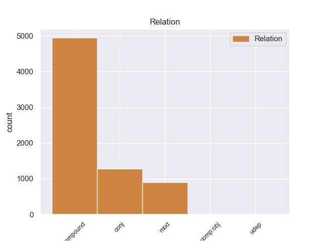
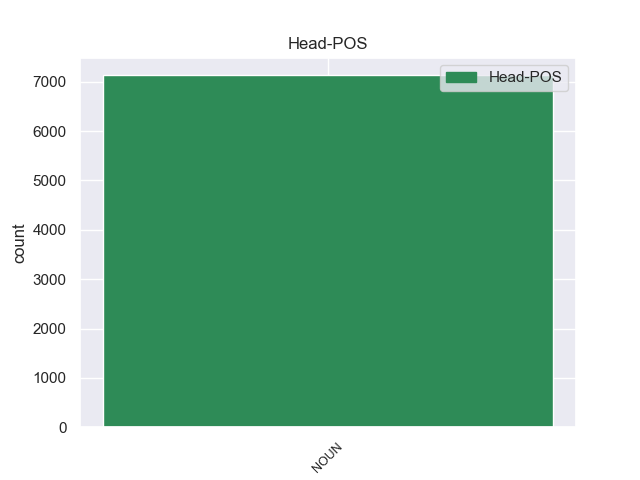
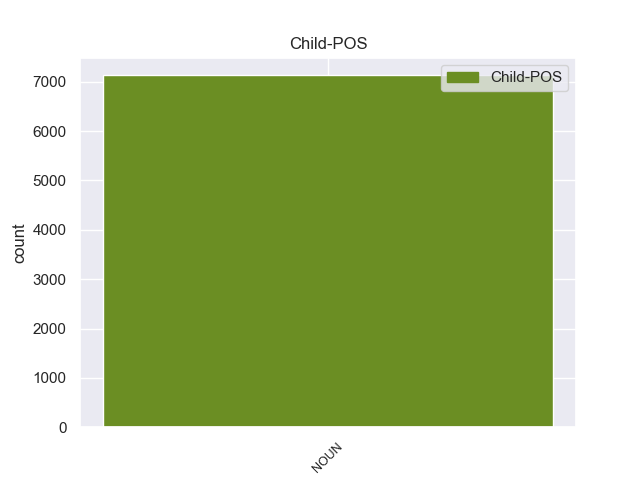

Distribution of features within this leaf



Agreement Rules sorted by frequency.
When the head token is NOUN and the dependent token is NOUN.
1 उन्होंने _ _ _ _ 0 _ _ _
2 यहां _ _ _ _ 0 _ _ _
3 वेटिकन _ _ _ _ 0 _ _ _
4 दूतावास _ _ _ _ 0 _ _ _
5 में _ _ _ _ 0 _ _ _
6 एक _ _ _ _ 0 _ _ _
7 शोक शोक NOUN NNC Case=Nom|Gender=Masc|Number=Sing|Person=3 8 compound _ ChunkId=NP4|ChunkType=child|Tam=0|Translit=śoka|Vib=0
8 पुस्तिका पुस्तिका NOUN NN Case=Acc|Gender=Fem|Number=Sing|Person=3 0 _ _ _
9 पर _ _ _ _ 0 _ _ _
10 हस्ताक्षर _ _ _ _ 0 _ _ _
11 कर _ _ _ _ 0 _ _ _
12 पोप _ _ _ _ 0 _ _ _
13 जॉन _ _ _ _ 0 _ _ _
14 पॉल _ _ _ _ 0 _ _ _
15 द्वितीय _ _ _ _ 0 _ _ _
16 के _ _ _ _ 0 _ _ _
17 निधन _ _ _ _ 0 _ _ _
18 पर _ _ _ _ 0 _ _ _
19 गहरा _ _ _ _ 0 _ _ _
20 दुख _ _ _ _ 0 _ _ _
21 प्रकट _ _ _ _ 0 _ _ _
22 किया _ _ _ _ 0 _ _ _
23 । _ _ _ _ 0 _ _ _
Disagree Examples:
1 जिसमें _ _ _ _ 0 _ _ _
2 चार _ _ _ _ 0 _ _ _
3 मेहराबें _ _ _ _ 0 _ _ _
4 हैं _ _ _ _ 0 _ _ _
5 और _ _ _ _ 0 _ _ _
6 मुख्य _ _ _ _ 0 _ _ _
7 प्रार्थना _ _ _ _ 0 _ _ _
8 हॉल _ _ _ _ 0 _ _ _
9 में _ _ _ _ 0 _ _ _
10 जाने _ _ _ _ 0 _ _ _
11 के _ _ _ _ 0 _ _ _
12 लिए _ _ _ _ 0 _ _ _
13 9 _ _ _ _ 0 _ _ _
14 प्रवेश प्रवेश NOUN NNC Case=Nom|Gender=Masc|Number=Sing|Person=3 15 compound _ ChunkId=NP4|ChunkType=child|Tam=0|Translit=praveśa|Vib=0
15 द्वार द्वार NOUN NN Case=Nom|Gender=Masc|Number=Plur|Person=3 0 _ _ _
16 हैं _ _ _ _ 0 _ _ _
17 । _ _ _ _ 0 _ _ _
1 यहीं _ _ _ _ 0 _ _ _
2 पर _ _ _ _ 0 _ _ _
3 एक _ _ _ _ 0 _ _ _
4 कला _ _ _ _ 0 _ _ _
5 संग्रहालय _ _ _ _ 0 _ _ _
6 , _ _ _ _ 0 _ _ _
7 कला _ _ _ _ 0 _ _ _
8 दीर्घा _ _ _ _ 0 _ _ _
9 , _ _ _ _ 0 _ _ _
10 फाइन _ _ _ _ 0 _ _ _
11 आर्ट _ _ _ _ 0 _ _ _
12 के _ _ _ _ 0 _ _ _
13 लिए _ _ _ _ 0 _ _ _
14 कार्यशाला _ _ _ _ 0 _ _ _
15 , _ _ _ _ 0 _ _ _
16 एक _ _ _ _ 0 _ _ _
17 थिएटर थिएटर NOUN NN Case=Nom|Gender=Masc|Number=Sing|Person=3 0 _ _ _
18 , _ _ _ _ 0 _ _ _
19 अंतरंग _ _ _ _ 0 _ _ _
20 और _ _ _ _ 0 _ _ _
21 बहिरंग _ _ _ _ 0 _ _ _
22 ऑडिटोरियम ऑडिटोरियम NOUN NN Case=Nom|Gender=Masc|Number=Plur|Person=3 17 conj _ ChunkId=NP7|ChunkType=head|SpaceAfter=No|Tam=0|Translit=ôḍiṭoriyama|Vib=0
23 , _ _ _ _ 0 _ _ _
24 रिहर्सल _ _ _ _ 0 _ _ _
25 कक्ष _ _ _ _ 0 _ _ _
26 , _ _ _ _ 0 _ _ _
27 भारतीय _ _ _ _ 0 _ _ _
28 कविताओं _ _ _ _ 0 _ _ _
29 का _ _ _ _ 0 _ _ _
30 पुस्तकालय _ _ _ _ 0 _ _ _
31 , _ _ _ _ 0 _ _ _
32 शास्त्रीय _ _ _ _ 0 _ _ _
33 और _ _ _ _ 0 _ _ _
34 लोक _ _ _ _ 0 _ _ _
35 संगीत _ _ _ _ 0 _ _ _
36 संग्रहालय _ _ _ _ 0 _ _ _
37 भी _ _ _ _ 0 _ _ _
38 हैं _ _ _ _ 0 _ _ _
39 । _ _ _ _ 0 _ _ _
1 यहीं _ _ _ _ 0 _ _ _
2 पर _ _ _ _ 0 _ _ _
3 एक _ _ _ _ 0 _ _ _
4 कला _ _ _ _ 0 _ _ _
5 संग्रहालय _ _ _ _ 0 _ _ _
6 , _ _ _ _ 0 _ _ _
7 कला _ _ _ _ 0 _ _ _
8 दीर्घा _ _ _ _ 0 _ _ _
9 , _ _ _ _ 0 _ _ _
10 फाइन _ _ _ _ 0 _ _ _
11 आर्ट _ _ _ _ 0 _ _ _
12 के _ _ _ _ 0 _ _ _
13 लिए _ _ _ _ 0 _ _ _
14 कार्यशाला _ _ _ _ 0 _ _ _
15 , _ _ _ _ 0 _ _ _
16 एक _ _ _ _ 0 _ _ _
17 थिएटर _ _ _ _ 0 _ _ _
18 , _ _ _ _ 0 _ _ _
19 अंतरंग _ _ _ _ 0 _ _ _
20 और _ _ _ _ 0 _ _ _
21 बहिरंग _ _ _ _ 0 _ _ _
22 ऑडिटोरियम ऑडिटोरियम NOUN NN Case=Nom|Gender=Masc|Number=Plur|Person=3 0 _ _ _
23 , _ _ _ _ 0 _ _ _
24 रिहर्सल _ _ _ _ 0 _ _ _
25 कक्ष कक्ष NOUN NN Case=Nom|Gender=Masc|Number=Sing|Person=3 22 conj _ ChunkId=NP8|ChunkType=head|SpaceAfter=No|Tam=0|Translit=kakṣa|Vib=0
26 , _ _ _ _ 0 _ _ _
27 भारतीय _ _ _ _ 0 _ _ _
28 कविताओं _ _ _ _ 0 _ _ _
29 का _ _ _ _ 0 _ _ _
30 पुस्तकालय _ _ _ _ 0 _ _ _
31 , _ _ _ _ 0 _ _ _
32 शास्त्रीय _ _ _ _ 0 _ _ _
33 और _ _ _ _ 0 _ _ _
34 लोक _ _ _ _ 0 _ _ _
35 संगीत _ _ _ _ 0 _ _ _
36 संग्रहालय _ _ _ _ 0 _ _ _
37 भी _ _ _ _ 0 _ _ _
38 हैं _ _ _ _ 0 _ _ _
39 । _ _ _ _ 0 _ _ _
1 यहाँ _ _ _ _ 0 _ _ _
2 आदिवासी आदिवासी NOUN NN Case=Acc|Gender=Masc|Number=Sing|Person=3 13 mod _ ChunkId=NP2|ChunkType=head|SpaceAfter=No|Tam=0|Translit=ādivāsī|Vib=0
3 , _ _ _ _ 0 _ _ _
4 समुद्र _ _ _ _ 0 _ _ _
5 किनारे _ _ _ _ 0 _ _ _
6 , _ _ _ _ 0 _ _ _
7 रेगिस्तान _ _ _ _ 0 _ _ _
8 और _ _ _ _ 0 _ _ _
9 हिमालय _ _ _ _ 0 _ _ _
10 के _ _ _ _ 0 _ _ _
11 आवासों _ _ _ _ 0 _ _ _
12 के _ _ _ _ 0 _ _ _
13 नमूने नमूना NOUN NN Case=Nom|Gender=Masc|Number=Plur|Person=3 0 _ _ _
14 भी _ _ _ _ 0 _ _ _
15 बनाए _ _ _ _ 0 _ _ _
16 गए _ _ _ _ 0 _ _ _
17 हैं _ _ _ _ 0 _ _ _
18 । _ _ _ _ 0 _ _ _
1 यहाँ _ _ _ _ 0 _ _ _
2 संग्रहालय _ _ _ _ 0 _ _ _
3 में _ _ _ _ 0 _ _ _
4 पुस्तकालय _ _ _ _ 0 _ _ _
5 , _ _ _ _ 0 _ _ _
6 दृश्य _ _ _ _ 0 _ _ _
7 - _ _ _ _ 0 _ _ _
8 श्रृव्य _ _ _ _ 0 _ _ _
9 आर्काइव _ _ _ _ 0 _ _ _
10 , _ _ _ _ 0 _ _ _
11 कंप्यूटरीकृत _ _ _ _ 0 _ _ _
12 कक्ष कक्ष NOUN NN Case=Acc|Gender=Masc|Number=Sing|Person=3 0 _ _ _
13 व _ _ _ _ 0 _ _ _
14 प्रजातीय _ _ _ _ 0 _ _ _
15 नमूनों नमूना NOUN NN Case=Acc|Gender=Masc|Number=Plur|Person=3 12 conj _ ChunkId=NP6|ChunkType=head|Tam=0|Translit=namūnoṁ|Vib=0_को
16 को _ _ _ _ 0 _ _ _
17 देखा _ _ _ _ 0 _ _ _
18 जाता _ _ _ _ 0 _ _ _
19 है _ _ _ _ 0 _ _ _
20 । _ _ _ _ 0 _ _ _